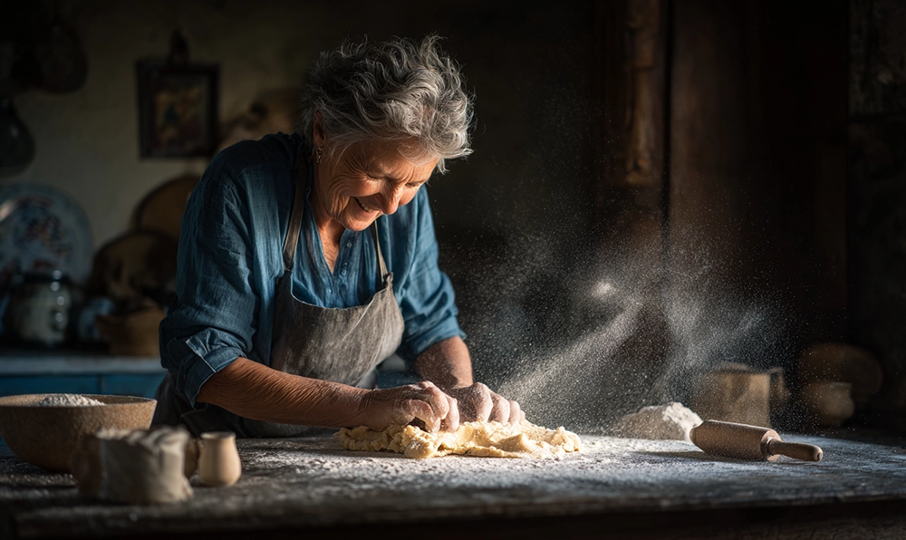

Une recette familiale, que je tiens de maman, qui la tenait de sa maman…

Faire roussir la semoule dans la casserole à feu vif. Lorsqu'elle prend une couleur brune, ajouter le lait en remuant plus ou moins vite, selon que l'on souhaite ou non la présence de grumeaux.
Saler, poivrer, et servir tiède...
Page principale